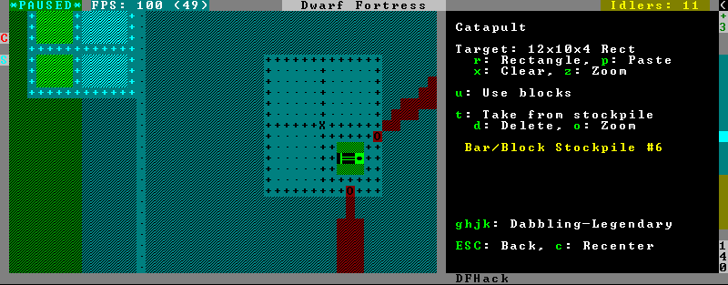

gui/siege-engine¶
This tool is an in-game interface for siege-engine, which allows you to link siege engines to stockpiles, restrict operation to certain dwarves, fire a greater variety of ammo, and aim in 3 dimensions.
Run the UI after selecting a siege engine in q mode.
The main UI mode displays the current target, selected ammo item type, linked stockpiles and the allowed operator skill range. The map tile color is changed to signify if it can be hit by the selected engine: green for fully reachable, blue for out of range, red for blocked, yellow for partially blocked.
Pressing r changes into the target selection mode, which works by highlighting two points with Enter like all designations. When a target area is set, the engine projectiles are aimed at that area, or units within it (this doesn’t actually change the original aiming code, instead the projectile trajectory parameters are rewritten as soon as it appears).
After setting the target in this way for one engine, you can ‘paste’ the same area into others just by pressing p in the main page of the UI. The area to paste is kept until you quit DF, or until you select another area manually.
Pressing t switches to a mode for selecting a stockpile to take ammo from.
Exiting from the siege engine UI via Esc reverts the view to the state prior to starting the script. ShiftEsc retains the current viewport, and also exits from the q mode to the main map.
Usage¶
gui/siege-engine
Screenshot¶
